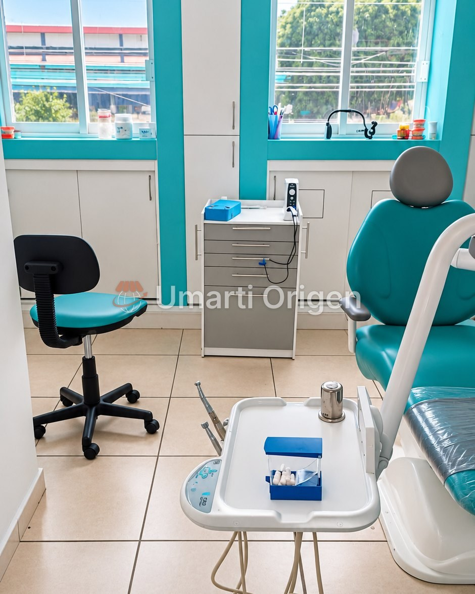

Una correcta higiene bucal es fundamental para mantener una sonrisa saludable y prevenir problemas como las caries, la acumulación de placa bacteriana y las enfermedades de las encías.
Incorporar buenos hábitos de limpieza dental en nuestra rutina diaria es una de las mejores maneras de cuidar nuestra salud bucal a largo plazo. A continuación, te compartimos algunos consejos para realizar un cepillado adecuado y mantener una buena higiene bucal.
1. Prepará todo lo necesario
Antes de comenzar, asegurate de tener a mano un cepillo dental de cerdas suaves, pasta dental con flúor y, si lo necesitás, hilo dental.
También podés utilizar un enjuague bucal como complemento de tu rutina, siempre que sea adecuado para tus necesidades.
2. Dedicá el tiempo suficiente
El cepillado debe durar al menos dos minutos. Es importante dedicar el tiempo necesario a cada zona de la boca para lograr una limpieza completa.
Una buena práctica es dividir mentalmente la boca en cuatro sectores y dedicar aproximadamente 30 segundos a cada uno.
3. Utilizá una técnica de cepillado adecuada
La técnica es tan importante como la frecuencia del cepillado. Para limpiar correctamente tus dientes, seguí estos pasos:
- Colocá el cepillo en un ángulo de aproximadamente 45 grados hacia la línea de las encías.
- Realizá movimientos suaves y cortos, prestando atención a la unión entre los dientes y las encías.
- Limpiá las superficies externas e internas de todos los dientes, sin ejercer demasiada presión.
- Cepillá las superficies de masticación con movimientos suaves de adelante hacia atrás.
- No olvides limpiar suavemente la lengua para ayudar a eliminar bacterias y mantener un aliento fresco.

4. Elegí y cuidá tu cepillo dental
El cepillo dental es una herramienta fundamental para mantener una buena higiene bucal.
Se recomienda utilizar un cepillo de cerdas suaves, con una cabeza de tamaño adecuado para alcanzar todas las zonas de la boca, incluidos los molares posteriores. Un mango cómodo también facilita el control y la maniobrabilidad durante el cepillado.
Es importante cambiar el cepillo aproximadamente cada tres meses, o antes si las cerdas están desgastadas o deformadas. Un cepillo en buenas condiciones permite realizar una limpieza más eficaz.
Después de utilizarlo, enjuagalo bien y dejalo secar al aire, en posición vertical y sin que entre en contacto con otros cepillos.
5. Utilizá una pasta dental con flúor
El flúor ayuda a fortalecer el esmalte dental y a prevenir las caries.
Para el cepillado diario, elegí una pasta dental que contenga flúor y utilizá la cantidad recomendada según tu edad y las indicaciones de tu dentista. En los adultos, generalmente se recomienda una cantidad similar al tamaño de una arveja.
Al terminar el cepillado, escupí el exceso de pasta y evitá enjuagarte inmediatamente con agua. De esta manera, el flúor puede permanecer más tiempo en contacto con los dientes.
La elección de una pasta dental también puede depender de las necesidades de cada persona, como la sensibilidad dental, el riesgo de caries o determinadas condiciones de las encías. Por eso, es recomendable consultar con un profesional para elegir la más adecuada.
6. Incorporá el hilo dental y, si es necesario, el enjuague bucal
El cepillado no siempre alcanza a limpiar correctamente los espacios entre los dientes. Por eso, el uso diario del hilo dental es un complemento importante para eliminar los restos de alimentos y la placa bacteriana de esas zonas.
Deslizá el hilo suavemente entre los dientes, formando una pequeña curva alrededor de cada uno y evitando movimientos bruscos que puedan lastimar las encías.
El enjuague bucal puede complementar la higiene diaria, pero no reemplaza el cepillado ni el hilo dental. Su uso dependerá de las necesidades de cada persona y de las recomendaciones del dentista.
7. Mantené una rutina diaria
La constancia es fundamental para una buena higiene bucal.
Se recomienda cepillarse los dientes al menos dos veces al día, durante dos minutos cada vez, especialmente antes de acostarse. También es importante limpiar los dientes entre sí diariamente mediante el uso de hilo dental u otro elemento interdental adecuado.
Consultá con tu dentista
Cada boca tiene necesidades diferentes. Si tenés sensibilidad dental, sangrado de encías, molestias o algún problema específico, es importante consultar con un profesional de la salud dental.
Además, las visitas periódicas al dentista permiten detectar posibles problemas a tiempo y realizar limpiezas profesionales cuando sean necesarias.
Cuidar nuestra sonrisa es también una forma de cuidar nuestra salud. Incorporar pequeños hábitos de higiene bucal todos los días puede marcar una gran diferencia a largo plazo.